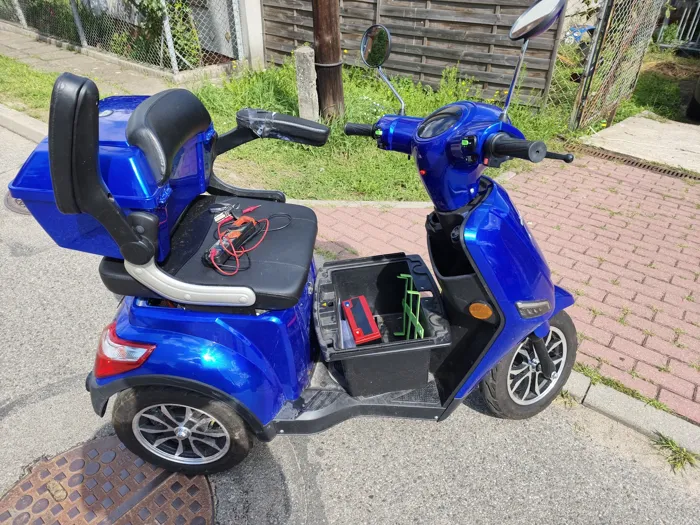

Naprawy
Naprawa hulajnóg elektrycznych w Kutnie
Dętki i opony, hamulce, sterowniki, wyświetlacze, baterie i modernizacje. Poniżej znajdziesz typowe objawy usterek i to, co z nimi robimy.
Wymiana dętki i opony, luzy, zawieszenie
Przebita dętka to najczęstszy powód wizyty w serwisie hulajnóg. Wymieniamy dętki i opony w hulajnogach elektrycznych, także w popularnych modelach Xiaomi i Motus, kasujemy luzy na kierownicy i mechanizmie składania oraz naprawiamy zawieszenie.
Typowe objawy
- kapeć albo powietrze schodzi po kilku dniach
- starty bieżnik, hulajnoga ślizga się na mokrym
- luz na kierownicy, stukanie przy jeździe po nierównościach
- drgania i skrzypienie zawieszenia
Co robimy
- wymiana dętek i opon (przód i tył)
- kasowanie luzów kolumny kierownicy i mechanizmu składania
- naprawa zawieszenia
Naprawa i regulacja hamulców
Hamulec to element, którego nie warto odkładać na później. Regulujemy i naprawiamy hamulce w hulajnogach elektrycznych, wymieniamy klocki i tarcze hamulcowe.
Typowe objawy
- hamulec słabo trzyma albo trzeba mocno ściskać dźwignię
- piszczenie i ocieranie tarczy
- luźna lub zbyt twarda dźwignia hamulca
Co robimy
- regulacja hamulców
- naprawa hamulców
- wymiana klocków hamulcowych
- wymiana tarcz
Naprawa sterownika, płyty i wyświetlacza
Gdy hulajnoga elektryczna nie włącza się, wyłącza się podczas jazdy albo szarpie przy ruszaniu, przyczyna często leży w elektronice. Naprawiamy sterowniki i płyty główne, wyświetlacze i manetki gazu, szukamy przetartych przewodów i luźnych złączy.
Typowe objawy
- hulajnoga nie włącza się mimo naładowanej baterii
- wyłącza się podczas jazdy
- szarpie przy ruszaniu albo nie reaguje na gaz
- kod błędu na wyświetlaczu (np. 14, 15, 18 lub 21 w hulajnogach Xiaomi)
Co robimy
- naprawa sterowników i płyt
- naprawa i wymiana wyświetlaczy
- diagnoza i usuwanie kodów błędów
- naprawa instalacji elektrycznej
Regeneracja baterii hulajnogi
Bateria to najdroższa część hulajnogi elektrycznej, dlatego zanim wymienisz ją na nową, warto sprawdzić, czy da się ją uratować. Diagnozujemy baterie, robimy renowację, regenerację i kalibrację ogniw.
Typowe objawy
- zasięg wyraźnie spadł
- hulajnoga gaśnie pod obciążeniem, np. pod górę
- bateria nie ładuje się albo ładowarka nie kończy ładowania
Co robimy
- diagnostyka baterii
- renowacja i regeneracja
- kalibracja ogniw
Modernizacje i odblokowanie prędkości
Na życzenie modernizujemy hulajnogi elektryczne: poprawiamy osiągi i zmieniamy blokady prędkości. Pamiętaj, że po drogach publicznych hulajnoga elektryczna może jechać najwyżej 20 km/h, szybciej wolno jeździć tylko po terenie prywatnym.
Typowe objawy
- hulajnoga słabo przyspiesza
- nie daje rady pod górę
- chcesz zmienić ustawienia fabryczne
Co robimy
- poprawa osiągów
- zmiana blokad prędkości
- modyfikacje na życzenie
Przegląd hulajnogi elektrycznej
Przegląd przed sezonem albo po zimie wyłapuje usterki, zanim zatrzymają cię w trasie. Sprawdzamy hamulce, luzy, opony, elektrykę i baterię, a przy okazji czyścimy i smarujemy sprzęt.
Typowe objawy
- hulajnoga stała całą zimę
- od dawna nikt jej nie sprawdzał
- jeździsz codziennie do pracy lub szkoły
Co robimy
- sprawdzenie hamulców, luzów i opon
- kontrola elektryki i baterii
- czyszczenie i smarowanie

Naprawa skutera i roweru elektrycznego
Skutery elektryczne, rowery elektryczne i inne pojazdy na baterię mają podobną elektrykę, akumulatory i hamulce jak hulajnogi, dlatego też je naprawiamy. Przy nietypowym sprzęcie zadzwoń przed przyjazdem i opisz, co się dzieje.
Pytania o naprawy
Ile kosztuje naprawa hulajnogi elektrycznej?
Zależy od usterki i modelu. Wymiana dętki to inna praca niż naprawa sterownika czy regeneracja baterii. Najpierw sprawdzamy, co jest przyczyną, i mówimy, ile będzie kosztować naprawa, a dopiero potem ją robimy.
Dlaczego hulajnoga elektryczna nie włącza się?
Najczęstsze przyczyny to rozładowana lub uszkodzona bateria, zabezpieczenie baterii (BMS), które odcięło zasilanie, przetarty przewód w kolumnie kierownicy albo uszkodzony sterownik lub wyświetlacz. Bez pomiarów trudno wskazać jedną z nich, dlatego zaczynamy od diagnozy.
Dlaczego hulajnoga wyłącza się podczas jazdy?
Zwykle winne jest napięcie baterii, które spada pod obciążeniem, luźne złącze albo przegrzewający się sterownik. Jeśli hulajnoga gaśnie np. pod górę albo przy mocnym przyspieszaniu, warto sprawdzić baterię.
Hulajnoga szarpie przy ruszaniu. Co to może być?
Często to manetka gazu, czujniki w silniku albo luźne połączenie między silnikiem a sterownikiem. Takiej usterki nie warto rozjeżdżać, bo może się pogłębić.
Co oznacza kod błędu na wyświetlaczu?
Kod błędu wskazuje, który układ hulajnogi zgłasza problem, np. silnik, sterownik, hamulec czy baterię. Zapisz go albo zrób zdjęcie wyświetlacza i podaj w zgłoszeniu, to przyspiesza diagnozę.
Czy regenerujecie baterie do hulajnóg Xiaomi?
Tak. Robimy diagnostykę, renowację i regenerację baterii hulajnóg elektrycznych, w tym Xiaomi, oraz kalibrację ogniw.
Czy można odblokować prędkość w hulajnodze?
Tak, zajmujemy się modernizacjami i zmianą blokad prędkości. Na drogach publicznych hulajnoga elektryczna może jechać najwyżej 20 km/h, szybsza jazda jest dozwolona tylko na terenie prywatnym.
Czy trzeba się umawiać?
Najlepiej zadzwoń przed przyjazdem pod 889 503 420. Upewnimy się, że ktoś jest na miejscu, i od razu wstępnie opowiesz, co się dzieje.